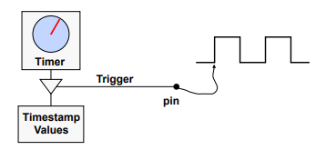
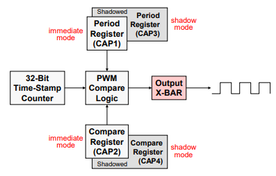

Enhanced Capture Module (eCAP)#
The C2000 enhanced capture module allows time-based logging of external signal transitions. It is used to accurately time external events by time stamping transitions on the capture input pin.
Note:
For dual-core devices, control peripherals are common between the two CPU subsystems. After reset they are connected to the CPU1 subsystem, and a series of CPU Select registers are used to configure each peripheral individually to be either controlled by the CPU1 or CPU2 subsystem.
eCAP can be used to measure the speed of a rotating machine, determine the elapsed time between pulses, calculate the period and duty cycle of a pulse train signal, and decode current/voltage measurements derived from duty cycle encoded current/voltage sensors.

Capture units can be configured to trigger an A/D conversion that is synchronized with an external event. There are several potential advantages to using the capture for this function over the ADCEXTSOC pin associated with the ADC module.
The ADCEXTSOC pin is level triggered, and therefore only low to high external signal transitions can start a conversion. The capture unit does not suffer from this limitation since it is edge triggered and can be configured to start a conversion on either rising edges or falling edges.
If the ADCEXTSOC pin is held high longer than one conversion period, a second conversion will be immediately initiated upon completion of the first. This unwanted second conversion could still be in progress when a desired conversion is needed. In addition, if the end-of-conversion ADC interrupt is enabled, this second conversion will trigger an unwanted interrupt upon its completion.
The two problems mentioned above are not a concern with the capture unit.
The capture unit can send an interrupt request to the CPU while it simultaneously initiates the A/D conversion. This can save time when computations are driven by an external event since the interrupt allows preliminary calculations to begin at the start-of-conversion, rather than at the end-of-conversion using the ADC end-of conversion interrupt. The ADCEXTSOC pin does not offer a start-of-conversion interrupt. Rather, polling of the ADCSOC bit in the control register would need to be performed to trap the externally initiated start of conversion.
eCAP Module - Capture Mode#
The eCAP module captures signal transitions on a dedicated input pin and sequentially loads a 32-bit time-base counter value in up to four 32-bit time-stamp capture registers (CAP1 – CAP4).
By using a 32-bit counter, rollover is minimized. Independent edge polarity can be configured as rising or falling edge, and the module can be run in either one-shot mode for up to four timestamp events or continuous mode to capture up to four time-stamp events operating as a circular buffer.
The capture input pin is routed through the Input X-Bar, allowing any GPIO pin on the device to be used as the input. Also, the input capture signal can be pre-scaled and interrupts can be generated on any of the four capture events. The time-base counter can be run in either absolute or difference (delta) time-stamp mode. In absolute mode the counter runs continuously, whereas in difference mode the counter resets on each capture.
eCAP Module - APWM Mode#

If the module is not used in capture mode, the eCAP module can be configured to operate as a single channel asymmetrical PWM module (i.e. time-base counter operates in count-up mode).
The capture unit interrupts offer immediate CPU notification of externally captured events. In situations where this is not required, the interrupts can be masked and flag testing/polling can be used instead. This offers increased flexibility for resource management.
Example: Consider a servo application where a capture unit is being used for low-speed velocity estimation via a pulsing sensor.
The velocity estimate is not used until the next control law calculation is made, which is driven in real-time using a timer interrupt. Upon entering the timer interrupt service routine, software can test the capture interrupt flag bit. If sufficient servo motion has occurred since the last control law calculation, the capture interrupt flag will be set and software can proceed to compute a new velocity estimate. If the flag is not set, then sufficient motion has not occurred and some alternate action would be taken for updating the velocity estimate. As a second example, consider the case where two successive captures are needed before a computation proceeds. If the width of the pulse is needed as soon as the pulse ends, then the capture interrupt is the best option. However, the capture interrupt will occur after each of the two captures, the first of which will waste a small number of cycles while the CPU is interrupted and then determines that it is indeed only the first capture. If the width of the pulse is not needed as soon as the pulse ends, the CPU can check, as needed, the capture registers to see if two captures have occurred, and proceed from there.
Resources#
High Resolution Capture (HRCAP)#
HRCAP Overview#
The HRCAP module enhances the capture resolution of the eCAP. This is achieved by using the high-speed asynchronous clock source HRCLK. Some common usage cases of the HRCAP module include:
Capacitive touch applications
High-resolution period and duty cycle measurements of pulse train cycles
Instantaneous speed measurements
Instantaneous frequency measurements
Voltage measurements across an isolation boundary
Distance/sonar measurement and scanning
Measuring flow
The features of the HRCAP module include:
Pulse-width capture in either non-high-resolution or high-resolution modes
Absolute mode pulse-width capture
Continuous or one-shot capture
Interrupt on either falling or rising edge
Continuous mode capture of pulse widths in 4-deep buffer
Hardware calibration logic for precision high-resolution capture
Additionally, each HRCAP-capable channel has the following independent key resources:
All hardware of the respective eCAP
High-resolution calibration logic
Dedicated calibration interrupt
HRCAP Initialization Sequence#
To set up the HRCAP to make time-converted measurements:
Configure the eCAP module as desired, including interrupts
Enable interrupts using
HRCAP_enableCalibrationInterrupt()Enable continuous calibration using
HRCAP_setCalibrationMode()Set calibration period using
HRCAP_setCalibrationPeriod()Enable HR mode using
HRCAP_enableHighResolution()Enable HRCLK using
HRCAP_enableHighResolutionCLock()Delay 1 microsecond
Start calibration using
HRCAP_startCalibration()
Steps 2, 3, 4, and 8 only apply for time-converted measurements. When using the HRCAP to take relative-time measurements, only steps 1, 5, 6, and 7 are required. Note that not all eCAP modules have the HRCAP capability, see your device data sheet for more details.
HRCAP Calibration#
It has been observed that high-speed clocks such as HRCLK are highly sensitive to temperature and voltage fluctuations. This can cause error in the HRCAP measurements. To further mitigate the effects of error due to temperature and voltage changes, the HRCAP has a built-in calibration unit for time-converted measurements. The calibration unit can be used to determine a scaling factor ratio between the system clock (SYSCLK) and HRCLK, which allows for the estimated period of HRCLK to be expressed in terms of the SYSCLK period.
The scaling factor is calculated using two free-running 32 bit counters HRSYSCLKCNT and HRCLKCNT, which are fed by SYSCLK and HRCLK, respectively. When HRSYSCLKCNT equals the programmable value of HRCALIBPERIOD, the values in HRSYSCLKCNT and HRCLKCNT are stored in HRSYSCLKCAP and HRCLKCAP, respectively. An interrupt is then triggered, which allows a new scaling factor to be calculated via the equation: ScaleFactor=HRSYSCLKCAP/HRCLKCAP. Therefore, a time-converted measurement from the HRCAP can be converted to nano-seconds using
(ECAP_REGS_CAPx*ScaleFactor*SYSCLKPRD)/128,
where 128 is a constant determined by the hardware of the HRCAP module. It is important to note that in most cases, HRCALIBPERIOD is selected in such a way that the value of HRCLKCAP will be much larger than HRSYSCLKCAP, which effectively averages the period of HRCLK and thus yields more accurate readings.
Resources#
Feedback
Please provide any feedback you may have about the content within C2000 Academy to: c2000_academy_feedback@list.ti.com